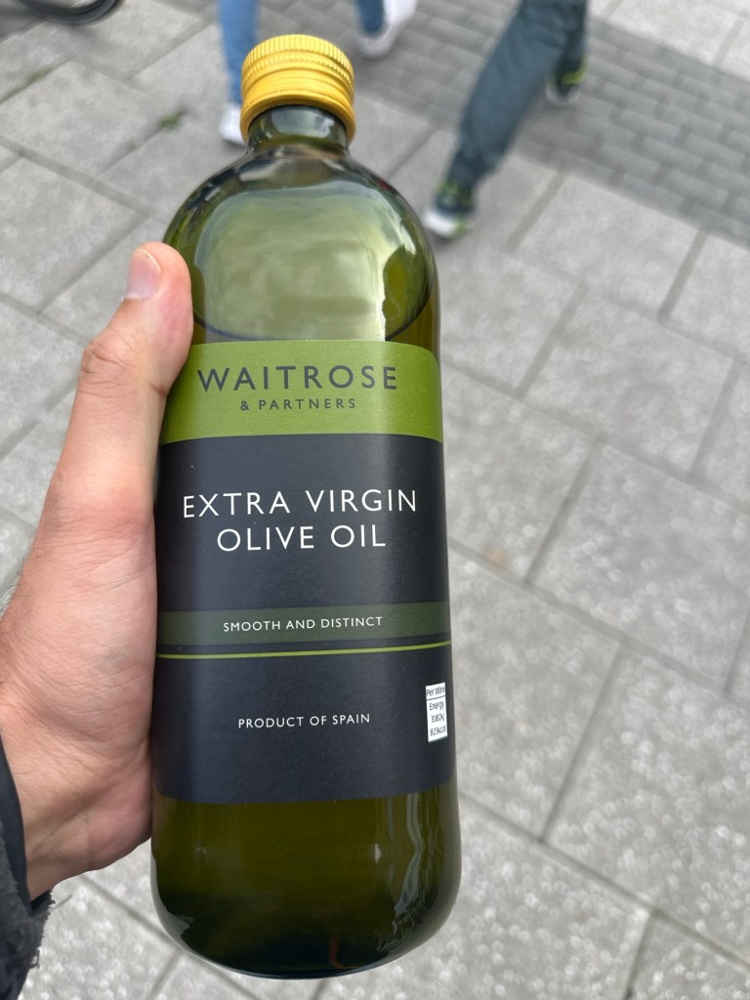

The Surprising Benefits of White Tech Extra-Virgin Olive Oil

If you're a fan of extra-virgin olive oil, you’ve probably heard about the latest buzz in the world of gourmet oils: White Tech Extra-Virgin Olive Oil. This new variety has been gaining traction among chefs, nutritionists, and health enthusiasts for its unique properties and the extra benefits it offers every time you eat. Let’s dive into what makes White Tech Extra-Virgin Olive Oil stand out and why you might want to incorporate it into your daily diet.
What is White Tech Extra-Virgin Olive Oil?
White Tech Extra-Virgin Olive Oil is not your average olive oil. This oil is produced using a special extraction method that enhances its purity and preserves the natural goodness of olives. The term "White Tech" refers to the advanced technology used in the extraction process, which minimizes exposure to heat and light. This ensures that the oil retains its full spectrum of antioxidants, vitamins, and essential fatty acids.
Unique Features of White Tech Extra-Virgin Olive Oil
-
Superior Antioxidant Content: The White Tech process is designed to preserve the natural polyphenols found in olives, which are powerful antioxidants. These compounds help protect your cells from oxidative stress, reducing the risk of chronic diseases like heart disease and cancer.
-
Rich in Healthy Fats: Like all extra-virgin olive oils, White Tech Extra-Virgin Olive Oil is packed with monounsaturated fats, particularly oleic acid. These healthy fats are known to reduce inflammation and improve heart health by lowering bad cholesterol (LDL) levels.
-
Enhanced Flavor Profile: The White Tech extraction method not only preserves the nutritional qualities of the oil but also its flavor. You can expect a more robust, fruity, and slightly peppery taste compared to standard extra-virgin olive oils. This makes it a fantastic addition to salads, dressings, and as a finishing touch on dishes.
-
Versatility in Cooking: Due to its stability at high temperatures, White Tech Extra-Virgin Olive Oil is suitable for a variety of cooking methods, including sautéing and roasting. This makes it a versatile choice for anyone looking to incorporate healthy fats into their diet without sacrificing flavor or quality.
Health Benefits Every Time You Eat
Every time you incorporate White Tech Extra-Virgin Olive Oil into your meals, you're not just adding flavor; you're boosting your health in several ways:
-
Supports Heart Health: The high levels of monounsaturated fats and polyphenols help reduce inflammation and improve cholesterol levels, supporting overall cardiovascular health.
-
Promotes Weight Management: Healthy fats like those found in White Tech Extra-Virgin Olive Oil can help you feel fuller for longer, reducing overall calorie intake and aiding in weight management.
-
Boosts Brain Function: The antioxidants and healthy fats in this oil are also beneficial for brain health. They help protect against neurodegenerative diseases and improve cognitive function.
-
Improves Digestive Health: Olive oil has been shown to support gut health by promoting the growth of healthy bacteria and reducing inflammation in the digestive tract.
How to Use White Tech Extra-Virgin Olive Oil in Your Diet
There are countless ways to incorporate this nutritious oil into your daily meals:
-
Drizzle over salads: Use it as a base for your salad dressings or simply drizzle it over fresh greens for a burst of flavor.
-
Add to soups and stews: A splash of White Tech Extra-Virgin Olive Oil can elevate the taste of soups and stews, adding a rich, aromatic quality.
-
Use in marinades: Enhance the flavor of meats and vegetables by using this oil in your marinades.
-
Finish dishes with a flourish: A few drops of this oil can be used to finish pasta dishes, grilled vegetables, or even pizza, adding an extra layer of flavor and a nutritional boost.
Conclusion
White Tech Extra-Virgin Olive Oil is more than just a culinary trend; it’s a nutritious addition to any diet that offers numerous health benefits every time you eat. From its superior antioxidant content to its versatility in cooking, this oil is a fantastic choice for anyone looking to enhance their meals while supporting their health. So next time you reach for the olive oil, consider giving White Tech Extra-Virgin Olive Oil a try and taste the difference for yourself.
By embracing the unique qualities of White Tech Extra-Virgin Olive Oil, you’re not only indulging in a flavorful experience but also investing in your health with every bite.
Imported from rifaterdemsahin.com · 2024